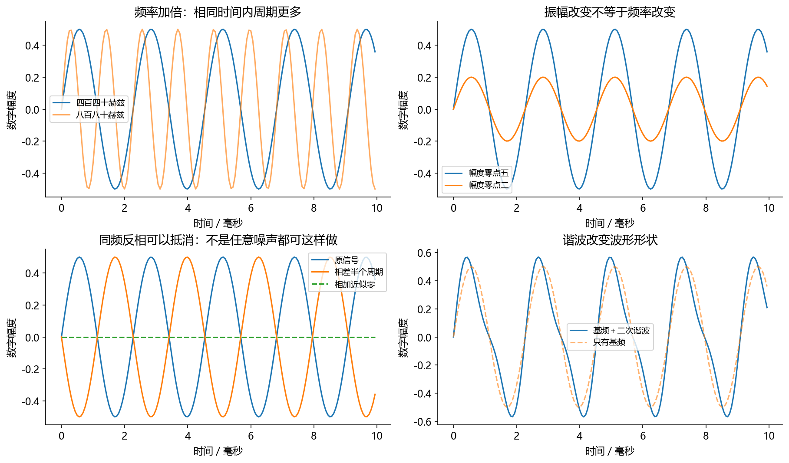

看图理解 · 跟着推演 · 对照真实结果
第00课 · 从零完成一次可信的音频小实验
先建立直觉，再逐节讲原理、代码与结果；章节目录可定位学习。把看教程变成可检查的学习过程：预测、运行、读图、解释与记录。
从直觉、原理，到代码与结果
本版保留导览小实验，增加教材逐节精讲、代码分段阅读和结果解释。三个项目另有本次真实模型短推理，第 12 课增加实际训练曲线。按右侧小节分次学习即可，不必一次看完。
完整文字、规范公式和注释代码仍在上方“读完整图文”。视频中的历史报告、教学算例与本次实测分别标明，短演示不冒充完整重训或设备验收。
先修：零音频基础；运行代码时需要可导入NumPy的Python环境。
- 知道正文、视频与实验各自怎么用
- 能检查音频数组的基本信息
- 能留下一份有条件、有结果的小实验记录
本课覆盖清单与证据范围
- 你在这门教程里要做到什么
- 一讲应该怎样读
- 网页正文、配套实验和下载附件怎么用
- 第一次运行：先查环境，不盲目重装
- 第一个图：该看什么
- 代码出错时按什么顺序查
- 本周只交三样东西
结果从哪里来
- 导览中的小算例实际执行
- 原教材逐节讲解；正文代码/公式/图保留
本课只运行合成纯音与数组检查，不涉及模型训练、实际麦克风校准或设备测量。
新版视频时间轴已改变，单独记录续播位置；学习计划的完成勾选保持不变。
跟着运行：注释代码、实际输出与结果图
下面代码在生成本站时实际执行。这里只是教学小实验，不是完整模型训练或业务设备测评。
import numpy as np
fs = 16000 # 一秒记录16000个采样点
t = np.arange(fs) / fs # 一秒的时间坐标
x = 0.5 * np.sin(2 * np.pi * 1000 * t)
# 单独改变幅度，频率与数组长度不变
half = x * 0.5
peak = np.max(np.abs(x)) # 最大绝对值
rms = np.sqrt(np.mean(x ** 2)) # 平方、平均、开根号
t_ms = t * 1000 # 图用毫秒，便于观察周期
print('shape/dtype:', x.shape, x.dtype)
print('时长:', len(x) / fs, '秒')
print('峰值与RMS:', peak, rms)
print('数值全部有限:', np.isfinite(x).all())
print('减半后长度:', len(half))
本次实际输出
shape/dtype: (16000,) float64 时长: 1.0 秒 峰值与RMS: 0.5 0.35355339059327384 数值全部有限: True 减半后长度: 16000

精讲中的代码、运行步骤与大图
代码片段用于逐行理解；真实运行结果仅限明确标注“本次实际”的部分。教材历史图保留原有实验范围。
结果读图 05 · 第一个图：该看什么
原教材运行记录

原教材已存图 不是本次新测 先确认实验范围 再解释坐标与单位
闭卷自测：16000个样本只把采样率标签从16000改为8000，时长如何变化？
原来1秒，改标签后2秒；播放速度和音调都会改变。这不是保持原声音时长的重采样。
逐字讲稿 · 可定位回看
把它想成第一次学做饭：先按配方做一小份，再只改一个用量。如果盐、火候、时间一起改，你很难知道味道变化来自哪里。音频实验也一样。
假设手里有 5 秒单声道录音，采样率是每秒 16000 点。先算：数组应有 80000 个采样点。 只把每个数字乘以 0.5。点数仍是 80000，所以时长仍为 5 秒；数值的绝对值变小了。
比较改前改后的波形与 RMS。若只是整体缩小，人声和噪声都会变小，不能因此宣布自己实现了降噪。 程序没有报错，只说明它跑完了；图看着漂亮，也不等于方法有效。还要检查输入、单位和对照。
如果你看到音频教程就觉得名词很多，先不要从模型名字开始背。今天的任务只有一个：产生一秒纯音，把它的幅度减半，然后解释结果为什么这样变化。
这件事会经过输入、处理和输出三个环节。输入是什么数，处理改变了哪个量，输出是否符合预测。这三问也适用于以后训练增强、分离和识别模型。
看完视频还不算已经掌握。你需要在最后遮住答案，预测一个改动，再用结果检查自己。错了很正常，找到错误发生在哪一步，才是这次学习真正的收获。
本课视频是帮助你听懂和看懂同一节课，不是另一套课程。遇到陌生符号可以暂停，回到本课正文查单位，再回来继续，不必打开一堆互不相关的入口。
代码和图片也属于同一个实验。网站展示的是已经运行保存的结果，不是浏览器在背后替你执行Python。想改参数验证，就需要在自己的编程环境运行。
下载的程序、练习本和文字备份是不同载体，不是多出来的学习顺序。先顺着章节学，遇到配套实验再做。这样才能把时间用于理解，而不是找入口。
本例一秒记录一万六千个数。数组中的第一个数编号为零，下一个编号为一。编号不是时间，要除以采样率才能知道对应第几秒。
例如编号十六除以一万六千，得到零点零零一秒，也就是一毫秒。整段一万六千个点除以每秒一万六千点，时长就是一秒。
请注意，我们生成的声音频率是一千赫兹，而采样率是一万六千赫兹。前者描述波形振动速度，后者描述电脑记录密度，不要看到单位相同就把它们混起来。
我们准备把整个数组乘零点五。先不要运行：你猜波形最高点会怎样，数组长度会怎样？如果你认为长度也会减半，说明把幅度与时间混在了一起。
正确预测是每个数缩小一半，点的个数仍是一万六千。图的高度变了，横轴覆盖的时间没有变，波峰出现的位置也没有变。
把预测写在纸上，比心里觉得大概懂了更有效。之后即使结果和预测不同，你也知道应该检查数值运算、坐标轴，还是自己的概念。
浏览网页不需要安装Python；亲自改代码才需要。第一次运行时先检查Python版本，再尝试导入NumPy，不要一开始同时安装很多音频框架。
如果提示找不到NumPy，先看编辑器和终端是否选中了同一个解释器。电脑可能同时有系统Python、Anaconda和项目虚拟环境，它们的库并不自动共享。
一次只改一件事。不要同时换解释器、重装库又修改程序，否则即使终于运行成功，也无法知道是哪一步解决了问题。完整报错比一句不能运行更有帮助。
前四行生成时间轴与纯音。时间轴和声音数组都是一维，形状是一万六千。正弦函数对每个时间点分别计算，因此不需要自己写一万六千次循环。
第五到第九行只改变幅度，并计算两个统计量。峰值取绝对值后的最大数；均方根先平方，再平均，再开根号。现在不必背缩写，先按操作顺序理解。
后面打印形状、类型、时长、峰值和数值是否有限。这些是数据体检，不是装饰性输出。真实项目一上来就检查它们，往往比直接送进模型更能省时间。
图上两条曲线的波峰位置一致，但一条高度只有另一条的一半。这和我们的预测一致：幅度变了，频率与时间长度没有变。
输出的原始峰值是零点五，均方根约零点三五三六，时长是一秒。图只截取前五毫秒来展示细节，并不是说整段音频只有五毫秒。
如果你得到空白图，先看数组是否全零和坐标范围是否合适。如果数值有无穷或非数，应该先解决数据问题。不要把每个异常都归结为电脑性能不好。
别人只看一张图，不知道你用了什么采样率、时间窗和幅度。保存代码和关键配置，才能让同一结果被复现，也才能解释为什么两次实验不同。
本例的均方根结论依赖完整正弦和这里的统计区间。换成语音、脉冲或者带静音的录音，不能直接照搬这个数字。每个结论都要跟着适用条件。
项目汇报时还要区分教学实验和真实测试。我们没有录麦克风，没有运行深度模型，也没有测设备声压；这次证明的是数组运算和数学预测一致。
电子信息和水声中的采样、滤波、阵列与传播模型，都能帮助你理解音频。但水下定位的数据和人类语音不同，完成过一个水声项目不等于已经会做语音识别。
你可以练习把专业经验讲成通用能力：我如何定义输入，如何检查噪声，如何控制实验条件，如何避免数据泄漏。这些能力会进入音频实习的日常工作。
同时承认还要补的知识：增强看语音保真与残留噪声，识别看转写错误和流式延迟，合成看发音韵律与音色。先搭共同底座，再选一条主项目做深。
现在暂停：一万六千个样本不变，只把采样率标签从一万六改成八千，播放需要多久？这是正确重采样吗？请先说出理由，再看答案。
每秒只播放八千个点，播放完一万六千个点需要两秒，音调也会降低。只改标签没有重新计算采样序列，因此不是保持原声音的正确重采样。
今天最后留下一页记录，写输入、改动、预测、观察和一个还不理解的问题。明天先不看答案，重新解释幅度减半为什么不改长度，再进入下一课。
不要把今天的目标写成“学习降噪”。写成：同一段带噪输入，经过三点平均后，高频干扰会下降多少，目标信号又会损失多少？这样你知道要画哪两条曲线，也知道结果可能不符合预期。
保留一份不处理的输入作为对照，只改变滤波这一项。如果同时换录音、归一化和滤波长度，结果变好也无法判断是谁起作用。固定随机种子是在固定教学输入，不是保证模型一定正确。
最后记录命令、Python版本、输入身份、参数、图和一句结论。别人能用同样输入复跑，比只展示一张漂亮曲线更有说服力。课程中的合成波形也必须写明不是人声。
提示找不到NumPy，先看正在运行哪个Python。终端命令中的Python与编辑器选择的解释器可能不是同一个。安装包前先打印sys.executable，在同一解释器下检查依赖，不要反复重装所有环境。
程序能跑但图看起来不对，先打印采样率、shape、最大最小值。把双声道误当成两秒声音、把毫秒当秒，往往不会立刻报错，却会让后面的公式全错。
形状与单位都正确，再检查算法。把结果与手算的四个点比较，能定位是索引、广播还是评价口径。不要一上来就换模型，先把最短路径跑通。
这是一节准备课，不是另一套“新手第一课”。读完本页后，继续第01课“声音本身”，再按第02、03课顺序学习。四份动手实验是正文的配套练习，不是四门平行课程；页面里遇到对应实验再打开即可。
假设你现在会一点 Python，学过大学数学，但没有处理过音频。第一目标不是训练大模型，而是回答三个问题：声音在电脑中是什么？算法改变了它的什么？我怎样判断改得好不好？
音频算法岗位不是一个统一工种。做耳机前端的同学会关心回声、风噪、麦克风和时延；做语音识别的同学会关心转写错误、训练数据与流式解码；做合成的同学会关心发音、韵律、音色和首包。共同底座是信号表示、编程、实验和评测。
你的电子信息与水声背景并不是无用的绕路。采样、滤波、阵列、传播、统计估计、实验设计能够迁移；
但水声数据不等于人类语音，完成水下定位也不自动代表会做识别。学习时主动区分“能迁移的数学”与“还要补的任务知识”。
本教程先搭共同底座，再分方向。第01—06课是识字阶段；第07—11课让你看懂传统音频与声学；第12课学习训练；第13—16课按任务深入；第17课把这些变成可展示的项目。
不要连续看完十讲再准备动手。每一小节按以下顺序走：先遮住答案，猜运行结果；再运行；再比较预测和观察；最后改一个参数，说明为什么发生变化。
例如你看到 x = 0.5 sin(...)，先问自己：0.5控制的是频率还是振幅？改成0.25以后数组长度会不会变？把这两个问题说清，比背“采样定理、傅里叶变换、信噪比”三个名词更有用。
遇到公式，先看每个字母的意思、单位、数组形状。公式可以先用数字代入理解，再推一般形式。遇到代码，先看输入与输出，不要从某个复杂库的参数列表开始背。 本课的类比只帮助入门。例如把采样比作拍照，能解释时间上只记录若干点；但并不意味着采样必然损失所有连续信息。满足带宽限制及采样条件时，理想理论允许重建。每个类比都要知道何处失效。
主入口是学习网站：先读本课正文，遇到核心代码就看它下面的输出与运行图，最后完成自测并进入下一课。浏览网页不需要安装 Python；只有想改参数、重新运行时，才需要编程环境。网页本身不会执行 Python。
配套实验按相同方式展示“代码—输出—图—解释”。学完第01、02课后，再做声音成为数组。还不熟悉数组切片和广播时，可以先读代码注释、预测输出；第04课会系统讲这些写法，不要求第一天就独立写完整程序。
下载区的 .py 是可运行的 Python 程序；.ipynb 是可逐格运行的 Jupyter 练习本；Markdown 是文字备份。它们服务于同一套教程，不是额外的学习顺序。图片由保存的程序实际生成，既不是手画的“应该如此”，也不表示网页正在实时计算。 一份实验有四种不同证据：代码说明做法，配置说明条件，结果文件保存数字，图帮助发现规律。漂亮的图不能替代配置，低损失也不能替代未知数据评测。
2026-10-22 的基础实验记录使用 Python 3.13.9、NumPy 2.4.4、SciPy 1.16.3、Matplotlib 3.10.6。这些是当时的测试版本，不是必须照搬的安装清单，也不保证今天终端仍指向同一个环境。神经训练的实际版本见原课程训练记录。
如果出现 ModuleNotFoundError，含义通常是“当前这个 Python 环境没有找到库”，不代表你所有环境都没装。先确认 VS Code/Jupyter 选择的解释器是否和终端相同。不要同时切换解释器、重装依赖、改代码，这样很难知道哪个变化解决了问题。
先确认上面的导入命令能成功，再从课程根目录运行基础脚本。下面使用本机课程路径；如果你把课程放到了别处，只改第一行的路径：
这条命令在课程内生成基础图、合成 WAV 与结果 JSON，不会录音或自动播放。若使用 Anaconda 或虚拟环境，先激活目标环境，再确认 python 就是该环境的解释器。不要把上述课程路径当成任何电脑都存在。
运行完看 tutorial/results/beginner_results.json：一秒16 kHz单声道有16000点，
0.5幅度正弦的RMS约0.3536。图在 tutorial/figures/。你也可以先读已经生成的结果，完全不急着运行所有脚本。
这张图由 tutorial/code/beginner_labs.py 的 first_wave() 实际生成。
左上只改变频率，所以周期数量不同；右上只改变振幅，所以高度不同；左下展示理想同频反相相加；右下加入谐波，波形形状发生变化。
不要由左下推出“把麦克风噪声乘负一就能做耳机降噪”。真实控制声还要经过扬声器与传播路径，并且需要满足因果性。第11课和原ANC实战会解释这个差别。
先看这张随教材保存的图。同一采样率下改变频率、振幅、相位和谐波的实测教学图。本次视频引用既有结果，不把它称为新运行。
横轴、纵轴、图例和单位决定图在回答什么问题。若曲线重合，先问它验证的是数值等价、形状还是算法质量。图像相似不自动证明真实业务效果相同。
把图中观察与本节假设联系起来，再回到前面的代码确认数组来源。合成信号实验、历史报告和真实模型输出属于不同证据范围，不能混成同一个成绩。
先看异常最后一行，识别是找不到文件、找不到库、形状不匹配还是数值异常。然后定位你自己文件中的行号。最后打印最小必要信息，不要一次输出几百万个样本。
音频程序的最小诊断信息是：采样率、shape、dtype、长度、峰值、是否存在 NaN/Inf。读到 shape=(48000,2)，先确认是样本×声道，不要默认二维就代表频谱。
若图像空白，检查数组是否全零、横轴单位是否混成秒/毫秒、纵轴范围是否把曲线裁掉。若听起来变调，检查采样率和文件头；若指标突然特别好，先检查有没有把干净答案混进输入或测试集。
第一，读完第01—03课后，用自己的话解释“16 kHz不是16 kHz音调”“0 dB SNR不是没声音”“数字幅度不等于声压”。
第二，运行第一份练习本，改一次频率和一次幅度，保存两张图。第三，写一页实验记录：输入、改动、观察、解释、尚未理解的一个问题。
检查题：把一秒16 kHz录音的文件头改成8 kHz，但不改16000个样本，会怎样？参考答案：按新采样率播放会变成两秒，音调也降低；这不是正确的重采样。若你能解释原因，就已经开始用“数据是什么”来思考，而不是只记函数名。
适用边界与参考正文
本课只运行合成纯音与数组检查，不涉及模型训练、实际麦克风校准或设备测量。
教学图与实验图由本站整理生成；项目代码、预训练模型和公开数据的来源见配套正文。旁白是本地中文语音合成，不是教师真人录音，也不是 NotebookLM 生成。没有向 Google 上传项目材料。